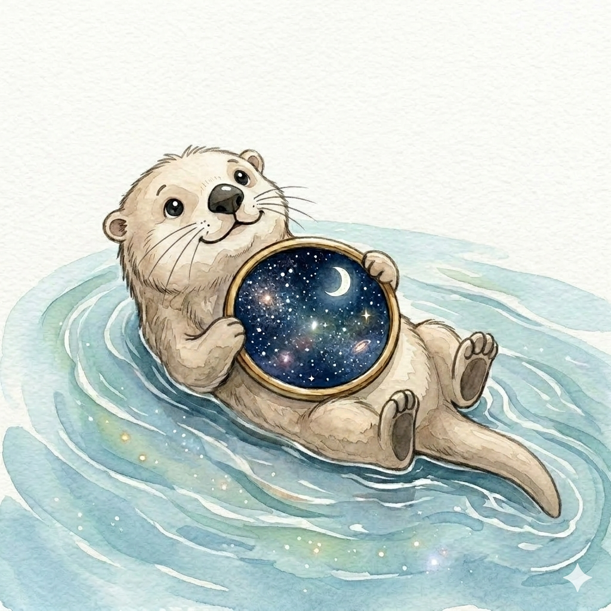

一人でただただ水面に浮いてボーッとしているのが好き。コミュニケーションが苦手なわけではなく、社交的で明るいタイプ。だけど、一人になる時間も大事。疲れちゃうから。
そうやって川をぷかぷか浮かびながら、気がついたら星の声が聞こえるようになっていた。
九星気学と四柱推命、ふたつの叡智を組み合わせてあなたの今日・今年・この先の流れを読みます。
むずかしい言葉は使わない。難しいことをわかりやすく、でも本質はちゃんと伝える。そんな鑑定を心がけています。
生年月日から導き出される「本命星（九星気学）」と「日干（四柱推命）」を組み合わせることで、あなただけの90パターンの中から、より細かくあなたの特徴・才能・運気の流れをお伝えします。
一般的な占いで「同じ星座」「同じ生まれ年」でひとくくりにされていたあなたも、この鑑定では唯一無二の存在として読み解きます。
🌟 あなたの星を診断してみるどうもはじめまして。管理者です。
仕事や人間関係に対して迷いが生じた時、一つの判断材料となったのがこの鑑定でした。
自分に自信が無くなった時、「違う角度から評価」をして進むべき方向の迷子になった時、「進む方向の一押し」になるように。そんな想いから作っています。
運営をしていくため、広告掲載とSNSの発信、noteの有料記事で収益を得ています。フォローやサイトの利用や記事をご覧いただき応援いただけますと大変うれしいです。
是非、感想も聞かせてくださいね。